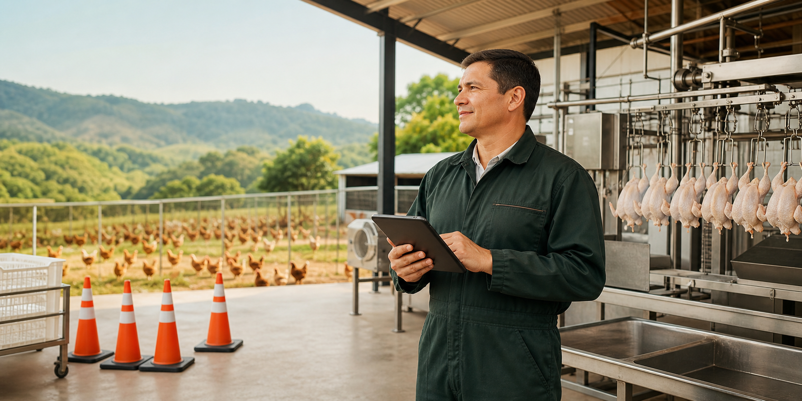
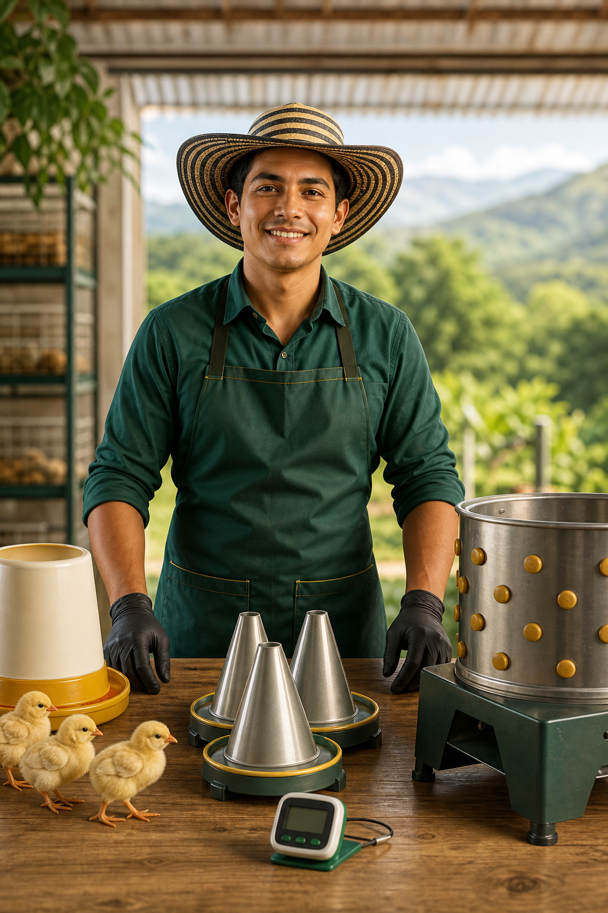
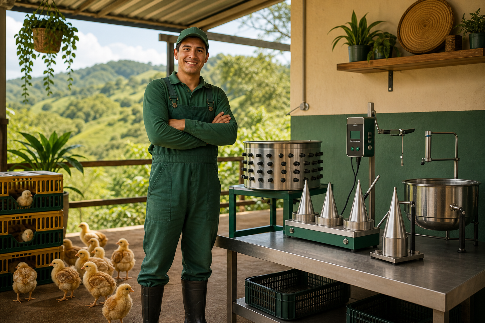
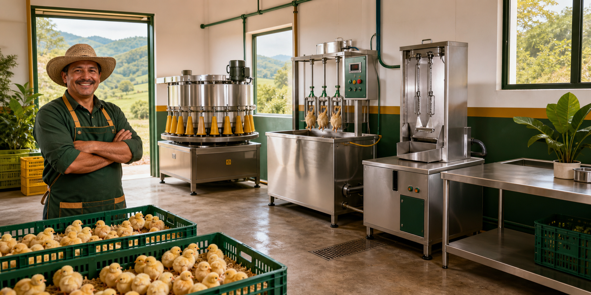

Primer paso
Empieza con orden
No tienes que comprar todo de una vez. Puedes iniciar con conos y organizar mejor tu beneficio.
- Conos individuales, base de 3 o base de 5.
- Menos improvisación en el proceso.
- Primer paso para trabajar con más control.

Programa para avicultores colombianos
Empieza con el equipo que tu producción necesita hoy y avanza por etapas hacia un proceso avícola más ordenado, medible y rentable.
Empieza con orden
Primer paso
No tienes que comprar todo de una vez. Puedes iniciar con conos y organizar mejor tu beneficio.
Manejo
Cuando tu proceso gane ritmo, puedes sumar un aturdidor de un pollo.
Actualizable
La peladora de tambor para taladro te ayuda a crecer sin saltar directo a una planta.
Más capacidad
Si ya procesas más volumen, tu operación necesita más capacidad y un flujo más estable.
Retoma
Si tu producción crece, tus equipos Allpa Tech pueden ayudarte a avanzar.
Próximamente
Allpa Crece seguirá sumando soluciones para acompañar más partes de tu proyecto avícola.
Asesor Allpa
Empecemos por lo más simple. Si ya sabes qué equipo necesitas, puedes cotizarlo de una vez. Si no, te guiamos paso a paso.
Ruta Allpa Crece
No tienes que comprar una planta completa desde el inicio. Puedes ordenar primero el beneficio, subir capacidad cuando vendas más y sumar tecnología cuando tu operación lo necesite.
Inicio Allpa

Puedes empezar con una inversión pequeña y resolver el dolor que más te frena hoy, sin comprar una planta completa.

Cuando vendes más, tu proceso necesita menos improvisación y equipos que puedan actualizarse contigo.

Si ya procesas más volumen, te conviene pensar en flujo completo: manejo, escaldado y pelado trabajando juntos.
Allpa Crece también sumará soluciones para acompañar el inicio del ciclo productivo.
Retoma Allpa Tech
Si compraste equipos Allpa Tech y tu producción aumentó, puedes solicitar una evaluación. Si el equipo aplica, la retoma puede ayudarte a pasar a una solución de mayor capacidad.
Solicitar evaluaciónCatálogo disponible